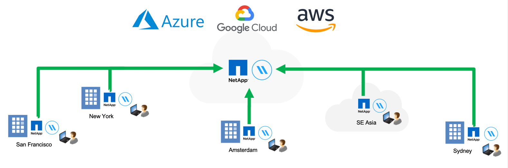
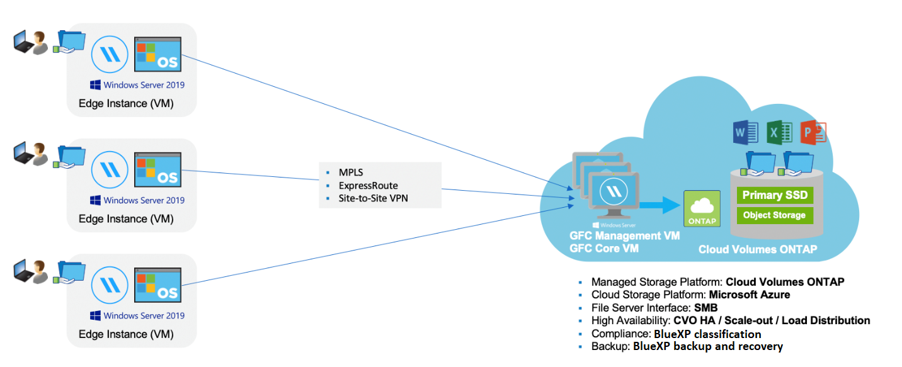

Notas de la versión
Notas de la versión
Obtén más información sobre el almacenamiento en caché del edge de BlueXP
 Sugerir cambios
Sugerir cambios
El almacenamiento en caché perimetral de NetApp BlueXP te permite consolidar silos de servidores de archivos distribuidos en una huella de almacenamiento global y cohesionada en la nube pública. Esto crea un sistema de archivos con acceso global en la nube que todas las ubicaciones remotas pueden usar como si fueran locales.
El almacenamiento en caché perimetral de BlueXP está disponible en dos modos de implementación para adaptarse a su arquitectura empresarial: Como en un servicio integrado combinado en una instancia de Cloud Volumes ONTAP (Cloud Volumes Edge Cache) o como componente complementario para su estrategia de almacenamiento empresarial (Global File Cache).
Descripción general
La implementación del almacenamiento en caché perimetral de BlueXP da como resultado una única huella de almacenamiento centralizada en comparación con una arquitectura de almacenamiento distribuida que requiere gestión de datos locales, backup, gestión de seguridad, almacenamiento y espacio de la infraestructura en cada ubicación.

Funciones
El almacenamiento en caché perimetral de BlueXP ofrece las siguientes funciones:
-
Consolide y centralice sus datos en el cloud público y en las aplicaciones aproveche la escalabilidad y el rendimiento de las soluciones de almacenamiento de clase empresarial
-
Crear un único conjunto de datos para usuarios de todo el mundo y aprovechar el almacenamiento en caché inteligente de archivos para mejorar el rendimiento, la colaboración y el acceso a los datos
-
Confíe en una caché autosostenible y de gestión automática, y elimine los backups y las copias de datos completas. Utilice el almacenamiento en caché de archivos locales para los datos activos y reduzca el almacenamiento externa
-
Acceso transparente desde sucursales a través de un espacio de nombre global con bloqueo central de archivos en tiempo real
Consulta más información sobre las funciones de almacenamiento en caché perimetral de BlueXP y los casos de uso "aquí".
Componentes de almacenamiento en caché perimetral de BlueXP
El almacenamiento en caché perimetral de BlueXP consta de los siguientes componentes:
-
Servidor de gestión
-
Núcleo
-
Edge (puesto en marcha en ubicaciones remotas)
La instancia de núcleo de almacenamiento en caché perimetral de BlueXP se monta en los recursos compartidos de archivos corporativos alojados en la plataforma de almacenamiento back-end elegida (como Cloud Volumes ONTAP, Cloud Volumes Service, Y Azure NetApp Files) y crea la estructura de almacenamiento en caché perimetral de BlueXP que proporciona la capacidad de centralizar y consolidar datos no estructurados en un único conjunto de datos, independientemente de si residen en una o en varias plataformas de almacenamiento en el cloud público.

Plataformas de almacenamiento compatibles
Las plataformas de almacenamiento compatibles para el almacenamiento en caché perimetral de BlueXP difieren en función de la opción de implementación que seleccione.
Opciones de puesta en marcha automatizadas
El almacenamiento en caché perimetral de BlueXP es compatible con los siguientes tipos de entornos de trabajo cuando se implementa mediante BlueXP:
-
Cloud Volumes ONTAP en Azure
-
Cloud Volumes ONTAP en AWS
-
Cloud Volumes ONTAP en Google Cloud
Esta configuración te permite poner en marcha y gestionar toda la puesta en marcha del lado del servidor de almacenamiento en caché perimetral de BlueXP, incluidos el servidor de gestión del almacenamiento en caché perimetral de BlueXP y el núcleo de almacenamiento en caché perimetral de BlueXP, desde BlueXP.
Opciones de puesta en marcha manual
Las configuraciones de almacenamiento en caché en el edge de BlueXP también son compatibles con Cloud Volumes ONTAP, Azure NetApp Files, Amazon FSx para sistemas ONTAP y Cloud Volumes Service en Google Cloud. Las soluciones en las instalaciones también están disponibles en las plataformas AFF y FAS de NetApp. En estas instalaciones, los componentes del lado del servidor de almacenamiento en caché perimetral de BlueXP se deben configurar y poner en marcha de forma manual, no mediante BlueXP.
Consulte "Guía del usuario de caché global de archivos de NetApp" para obtener más detalles.
Funcionamiento del almacenamiento en caché perimetral de BlueXP
El almacenamiento en caché perimetral de BlueXP crea una estructura de software que almacena en caché los conjuntos de datos activos en oficinas remotas de todo el mundo. Como resultado, se garantiza a los usuarios empresariales un acceso transparente a los datos y un rendimiento óptimo a escala global.

La topología a la que se hace referencia en este ejemplo es un modelo de concentrador y radio, en el que la red de oficinas remotas/ubicaciones está accediendo a un conjunto común de datos en la nube. Los puntos clave de este ejemplo son:
-
Almacenamiento de datos centralizado:
-
Plataforma de almacenamiento en cloud público empresarial, como Cloud Volumes ONTAP
-
-
Estructura de almacenamiento en caché en el edge de BlueXP:
-
Extensión del almacén de datos central a las ubicaciones remotas
-
Almacenamiento en caché perimetral de BlueXP Instancia de núcleo, montaje en recursos compartidos de archivos corporativos (SMB).
-
Las instancias de Edge se ejecutan en cada ubicación remota.
-
Presenta un recurso compartido de archivos virtual en cada ubicación remota que proporciona acceso a los datos centrales.
-
Aloja la caché de archivos inteligente en un volumen NTFS de tamaño personalizado (
D:\).
-
-
Configuración de red:
-
Conectividad de conmutación de etiquetas multiprotocolo (MPLS), ExpressRoute o VPN
-
-
Integración con los servicios de dominio de Active Directory del cliente.
-
Espacio de nombres DFS para el uso de un espacio de nombres global (recomendado).
Coste
El coste del uso del almacenamiento en caché perimetral de BlueXP depende del tipo de instalación que hayas elegido.
-
Todas las instalaciones requieren que usted ponga en marcha uno o más volúmenes en el cloud (por ejemplo, Cloud Volumes ONTAP, Cloud Volumes Service o Azure NetApp Files). Esto resulta en cargos del proveedor de cloud seleccionado.
-
Todas las instalaciones también requieren la puesta en marcha de dos o más máquinas virtuales (VM) en el cloud. Esto resulta en cargos del proveedor de cloud seleccionado.
-
Servidor de gestión de almacenamiento en caché perimetral de BlueXP:
En Azure, se ejecuta en una máquina virtual D2S_V3 o equivalente (2 vCPU/8 GB de RAM) con SSD estándar de 127 GB
En AWS, se ejecuta en una instancia m4.Large o equivalente (2 vCPU/8 GB de RAM) con SSD de 127 GB de uso general
En Google Cloud, se ejecuta en una instancia n2-standard-2 o equivalente (2 vCPU/8 GB de RAM) con 127 GB de SSD de propósito general
-
Núcleo de almacenamiento en caché perimetral de BlueXP:
En Azure, esto se ejecuta en una máquina virtual D8s_V4 o equivalente (8 vCPU/32 GB de RAM) con SSD premium de 127 GB
En AWS, se ejecuta en una instancia de m4,2xlarge o equivalente (8 vCPU/32 GB de RAM) con SSD de propósito general de 127 GB
En Google Cloud, se ejecuta en una instancia n2-standard-8 o equivalente (8 vCPU/32 GB de RAM) con 127 GB de SSD de propósito general
-
-
Cuando se instala con Cloud Volumes ONTAP (las configuraciones compatibles puestas en marcha completamente mediante BlueXP), hay dos opciones de precio:
-
En los sistemas Cloud Volumes ONTAP, puedes pagar $3.000 USD por cada instancia de Edge de almacenamiento en caché perimetral de BlueXP al año.
-
Además, para los sistemas Cloud Volumes ONTAP en Azure y GCP, puede elegir el paquete Cloud Volumes ONTAP Edge Cache. Esta licencia basada en la capacidad te permite poner en marcha una única instancia de almacenamiento en caché perimetral de BlueXP para cada 3 TiB de capacidad adquirida. "Más información aquí".
-
-
Cuando se instala con las opciones de implementación manual, el precio es diferente. Para ver una estimación de costes de alto nivel, consulte "Calcule cuánto puede ahorrar" También puede consultar a su ingeniero de soluciones de NetApp si quiere hablar de las mejores opciones para la puesta en marcha de su empresa.
Licencia
El almacenamiento en caché perimetral de BlueXP incluye un servidor de administración de licencias (LMS) basado en software, que te permite consolidar la gestión de licencias e implementar licencias en todas las instancias del núcleo y el perímetro mediante un mecanismo automatizado.
Al implementar la primera instancia de Core en el centro de datos o en la nube, puede elegir designar dicha instancia como la LMS para su organización. Esta instancia LMS se configura una vez, se conecta al servicio de suscripción (a través de HTTPS) y valida su suscripción utilizando el ID de cliente proporcionado por nuestro departamento de soporte/operaciones al habilitar la suscripción. Después de realizar esta designación, asocie las instancias de Edge con el LMS proporcionando el ID de cliente y la dirección IP de la instancia de LMS.
Al adquirir licencias Edge adicionales o renovar su suscripción, nuestro departamento de soporte/operaciones actualiza los detalles de la licencia, por ejemplo, el número de sitios o la fecha de finalización de la suscripción. Una vez que LMS consulta al servicio de suscripción, los detalles de la licencia se actualizan automáticamente en la instancia de LMS y se aplican a las instancias de GFC Core y Edge.
Consulte "Guía del usuario de caché global de archivos de NetApp" para obtener más información sobre las licencias.
Limitaciones
La versión de almacenamiento en caché perimetral de BlueXP compatible con BlueXP (Cloud Volumes Edge Cache) requiere que la plataforma de almacenamiento de back-end utilizada como almacenamiento central debe ser un entorno de trabajo donde haya puesto en marcha un nodo único de Cloud Volumes ONTAP o un par de alta disponibilidad en Azure, AWS o Google Cloud.
Actualmente, otras plataformas de almacenamiento no son compatibles con BlueXP, pero se pueden implementar utilizando procedimientos de implementación anteriores. El resto de configuraciones, por ejemplo, Global File Cache con Amazon FSX para sistemas ONTAP, Azure NetApp Files o Cloud Volumes Service en Google Cloud, son compatibles con procedimientos anteriores. Consulte "Incorporación e información general sobre la caché de archivos global" para obtener más detalles.